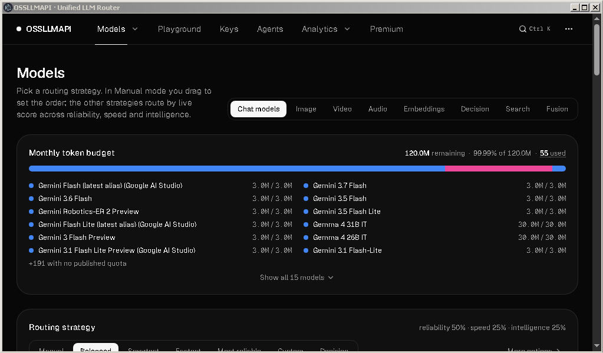
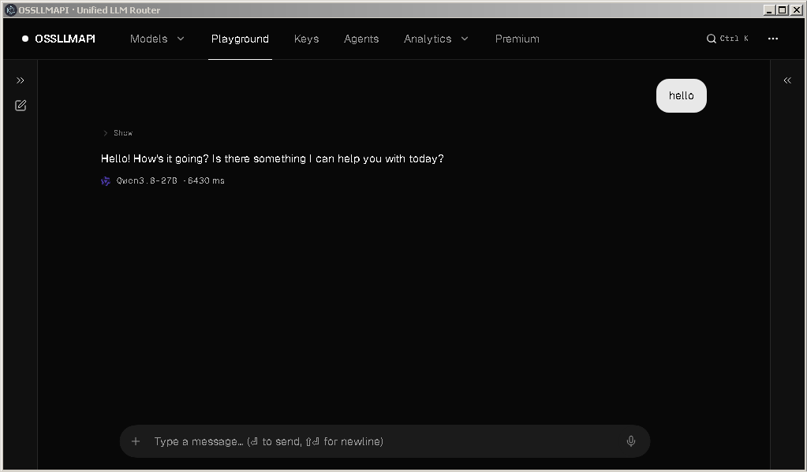
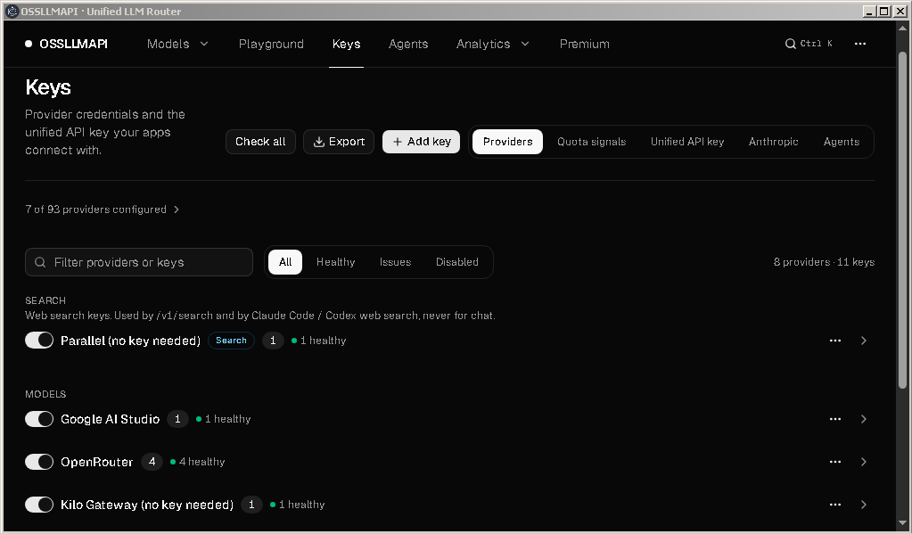
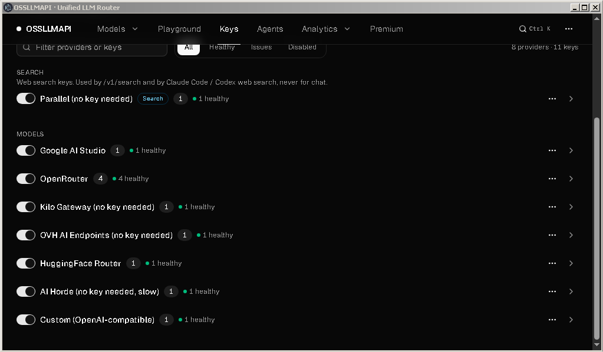

Home/Dashboard
Every request, routed and counted.
The models list on the left is every endpoint the router can reach. The open item on the right is this month's usage: tokens spent per key, against the free-tier cap of each provider.
- gpt-4o-miniOpenAI · chatServed38%
- claude-3-5-haikuAnthropic · chatServed27%
- gemini-1.5-flashGoogle · chat, embedReady16%
- llama-3.3-70bGroq · chatReady9%
- deepseek-chatDeepSeek · chatReady5%
- qwen-2.5-72bQwen · chatReady3%
- mistral-largeMistral · chatReady1%
- command-r-plusCohere · chat, embedReady1%
- phi-3-mediumMicrosoft · chatServed0%
- llama3.1 · localOllama · chatReady0%
ossllmapi · usage
Tokens this month
This month
7.4B
12%
of the 10.1B free tier
Real screenshots on Windows 7 x86.
Every shot below was taken on a stock Windows 7 x86 SP1 machine, to show OSSLLMAPI performs well on legacy hardware. The same router runs on a modern server and on a phone; it does not demand a new one.






Windows 7 SP1 users grab the portable zip from the dedicated release — the latest .exe will not run there. Windows 7 portable zip (v0.16.34-preview.1)